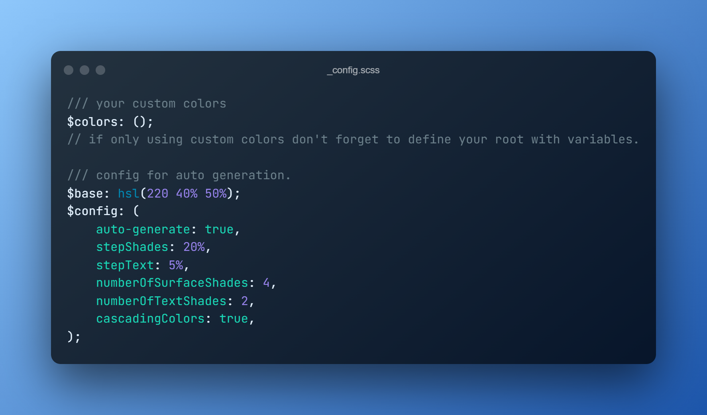

Color experiments with Design Tokens
A little demo site showcasing the usecases for the colors section of design tokens
One color variable to rule them all
Define a base color in the configuration file and tokens will take care of the rest of the colors. ✨Including dark theme✨
Main goal of this was to eliminate the repetition of making light and dark theme colors for each and every project which can get time consuming.
I don't care about your color preference.
Some sections need to stay in dark/light theme no matter user's preference
I do the exact opposite of what you ask me to.
Well, its possible so just showcasing. Play with color preferences in DevTools to see the effect
I just need some compliments
Complimentary colors are a good way to showcase buttons and other elements which live on the surface.
I either stay black or white
Plain and Simple. Very useful to keep designs minimal